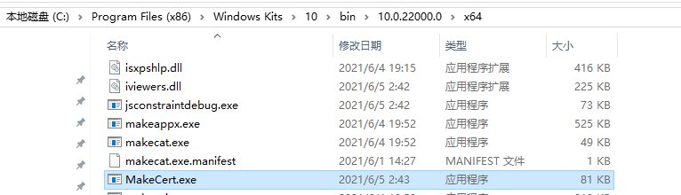
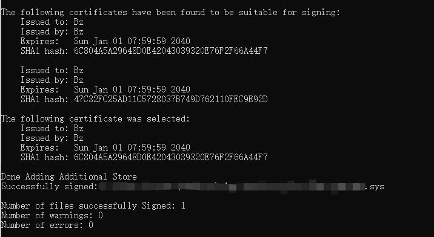
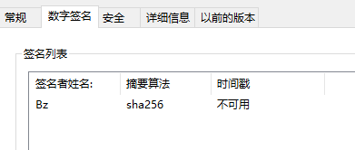

Windows驱动自签名
需要makecert.exe和signtool.exe这两个开发工具。这两个工具在WDK的安装包中就有的。例如我本地安装的WDK10.0.22000.0，那么在安装目录下即可看到这两个可执行文件。

先来介绍下这两个工具：
- makecert.exe 是用来生成证书文件的，也就是用它来生成一个后缀位.cer的文件；
- signtool.exe 则是签名工具。用它来对驱动文件进行签名。
有了上述的准备过程我们就先来生成一个证书。
1.生成证书
在命令行窗口中执行如下的命令行生成一个证书文件。
makecert -pe -ss Bz -n "CN=Bz" bz.cer -r
这样我们就生成了一个bz.cer的证书文件。证书名称为Bz。
至于上述命令中的各种参数可以使用makecert -h查看它的参数介绍：
C:\Program Files (x86)\Windows Kits\10\bin\10.0.22000.0\x64>makecert -h
Usage: MakeCert [ basic|extended options] [outputCertificateFile]
Basic Options
-sk <keyName> Subject's key container name; To be created if not present
-pe Mark generated private key as exportable
-ss <store> Subject's certificate store name that stores the output
certificate
-sr <location> Subject's certificate store location.
<CurrentUser|LocalMachine>. Default to 'CurrentUser'
-# <number> Serial Number from 1 to 2^31-1. Default to be unique
-$ <authority> The signing authority of the certificate
<individual|commercial>
-n <X509name> Certificate subject X500 name (eg: CN=Fred Dews)
-? Return a list of basic options
-! Return a list of extended options
2. 使用Signtool进行签名
# 要签名的文件用空格隔开
signtool.exe sign /fd SHA256 /v /a /s Bz /n bz XXX.sys
运行上述命令就可以看到如下的结果，这就表示签名成功了。

可以在签名过的文件上查看其属性：

3. 开启测试模式
打开测试模式才可以使用自签名证书，所以需要我们在测试的机器上开启测试模式：
在命令行窗口中执行如下的命令即可开启测试模式。
bcdedit -set NOINTEGRITYCHECKS ON
bcdedit -set TESTSIGNING ON
bcdedit -set loadoptions DDISABLE_INTEGRITY_CHECKS
- 原文作者：Binean
- 原文链接：https://bzhou830.github.io/post/20220802Windows%E9%A9%B1%E5%8A%A8%E8%87%AA%E7%AD%BE%E5%90%8D/
- 版权声明：本作品采用知识共享署名-非商业性使用-禁止演绎 4.0 国际许可协议进行许可，非商业转载请注明出处（作者，原文链接），商业转载请联系作者获得授权。